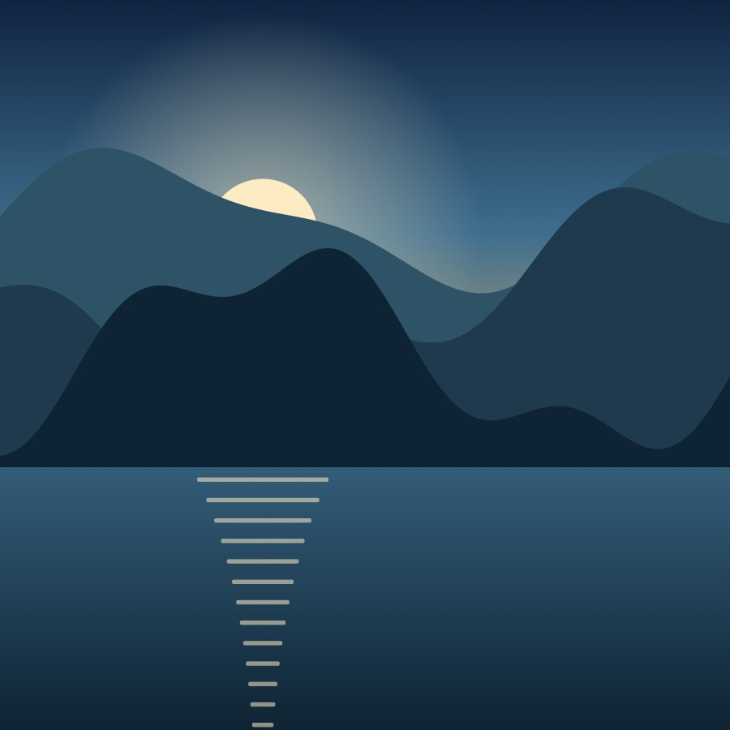
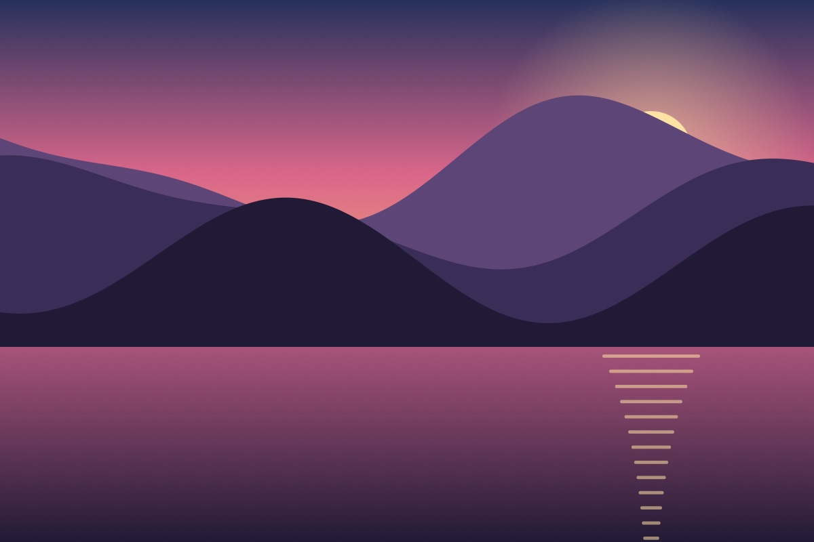
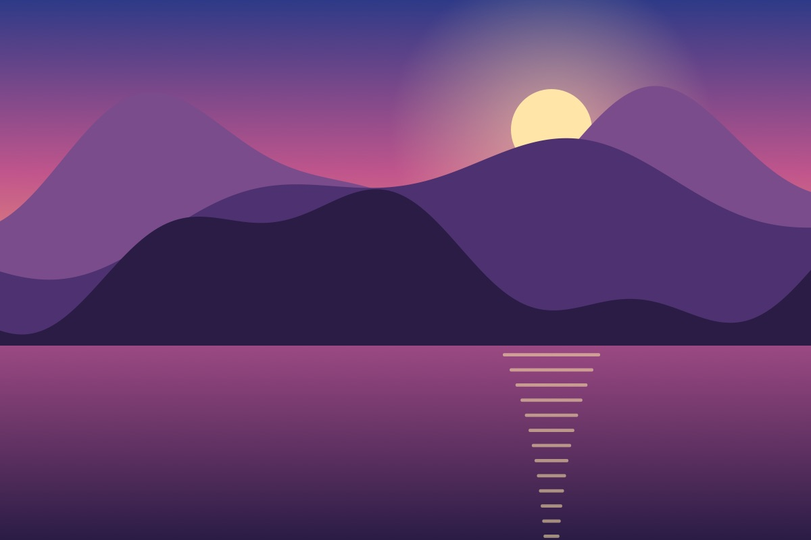

Travel · 8 min read
Ten quiet places to watch the sun go down

By Mira Okafor · Photos by the Northlight team · 27 October 2026
A good sunset needs three things: a clear western horizon, somewhere to sit, and nobody selling you anything. We asked readers for their favourite spots, then spent a summer checking them against sunset times and the golden hour.
The light changes fastest in the ten minutes after the sun touches the horizon. That’s when the sky turns from gold to pink, a shift explained by Rayleigh scattering. Bring a jacket: it cools quickly.
1. The cliff path

Park at the lighthouse and follow the coastal path north for twenty minutes. The bench at the second bend faces due west.
2. The dunes at the end of the road
Bring water. The dune field holds the day’s heat long after dark, and the ridge line makes a perfect silhouette.
More from the series


Tell us your place
Know a better spot? Write to editors@northlight.example. To license a photo, email photos [at] northlight [dot] example. Press: [email protected], hidden the way Cloudflare protects addresses.